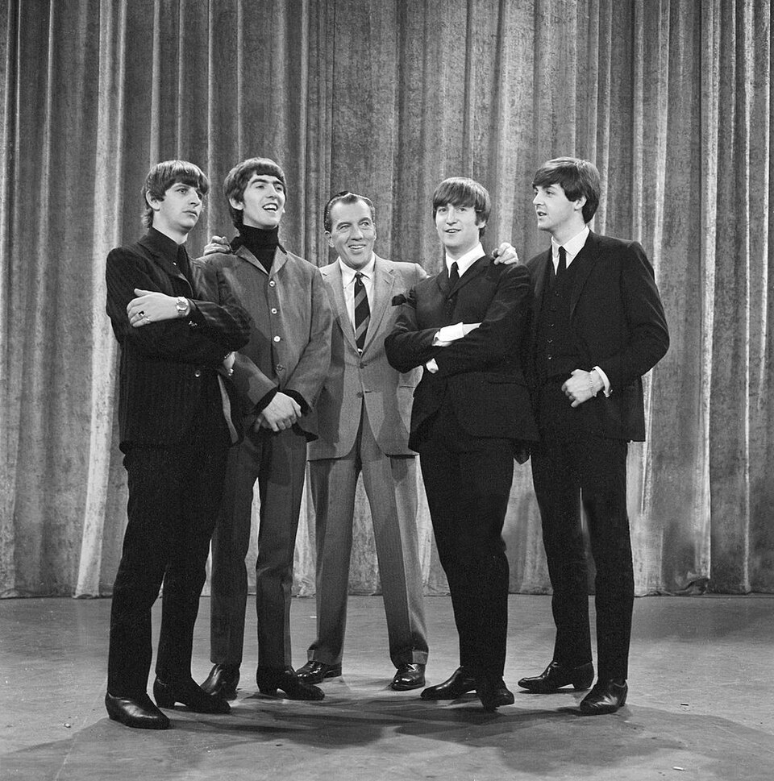

60s rock was not one sound but four, all peaking between 1963 and 1969.
British Invasion bands, garage bands, folk rockers, and psychedelic acts each took a turn at the front.
This guide maps the whole decade, year by year.
Then it points you to the full story of each branch.

Table of Contents
- What Is 60s Rock
- The Timeline, Year by Year
- The Four Branches at a Glance
- The Bands That Defined the Decade
- Where the Sound Went Next
- FAQ
What Is 60s Rock
60s rock is the guitar-driven music that dominated popular radio from the early 1960s to 1969.
Its raw material was American blues, R&B, and early rock and roll.
Young players on both sides of the Atlantic took that material and plugged it in louder.
Within ten years the sound went from teenage garages to album-length studio experiments.
Why There Is No Single Sound
No one band or city owns the decade.
Liverpool and London produced the British Invasion.
Portland, Los Angeles, and Texas produced garage bands.
Greenwich Village and Los Angeles produced folk rock.
San Francisco and London produced psychedelia.
That spread is why this guide works as a map rather than a single story.
The Timeline, Year by Year
1960 to 1963: Garage and Surf Lay the Groundwork
Before The Beatles reached America, the raw material was already in place.
Dick Dale was playing reverb-heavy surf guitar in California.
The Beach Boys formed in Hawthorne, California in 1961.
In 1963 The Kingsmen cut "Louie Louie" in one take, and it climbed to number two on the Billboard Hot 100.
The Garage & Surf Rock hub tells that story in full.
1964: The British Invasion Lands
"I Want to Hold Your Hand" reached number one on the Billboard Hot 100 on January 25, 1964.
On February 9, 1964, an estimated 73 million Americans watched The Beatles on The Ed Sullivan Show.
The Rolling Stones, The Kinks, The Animals, and The Who followed within months.
The Kinks' distorted riff on "You Really Got Me" sketched out the blueprint for hard rock.
Read the British Invasion hub for how it unfolded.
1965: Folk Rock Plugs In
The Byrds took Bob Dylan's "Mr. Tambourine Man" to number one in 1965.
Dylan himself went electric at the Newport Folk Festival on July 25, 1965.
Jangling twelve-string guitars and literate lyrics became the new standard.
That same year The Rolling Stones released "(I Can't Get No) Satisfaction," built on a fuzz guitar riff.
The Folk Rock hub covers the full wave.
1966 to 1967: Psychedelia Takes Over
The Byrds' "Eight Miles High" and The Beatles' "Rain" arrived in early 1966.
Both pointed toward a stranger sound built from feedback, backward tape, and Indian instruments.
The Beach Boys' "Good Vibrations" showed how far a pop group could push a studio.
The Beatles released Sgt. Pepper's Lonely Hearts Club Band in May 1967.
The Doors' "Light My Fire" went to number one that summer.
The Psychedelic Rock hub explains how the sound was made.
1968 to 1969: Heavier, Longer, Louder
By 1968 many of the loudest bands had left the three-minute single behind.
Cream paired Eric Clapton's guitar with long, blues-based jams.
The Yardbirds' guitar lineage of Clapton, Beck, and Page runs straight through Cream and Led Zeppelin.
Steppenwolf's "Magic Carpet Ride" carried the heavier sound onto Top 40 radio.
Woodstock in August 1969 came closer to the end of an era than its start.
The Four Branches at a Glance
Each branch has its own hub with a full guide.
This table sets the four side by side.
| Branch | Peak years | Signature record | Key acts |
|---|---|---|---|
| British Invasion | 1964 to 1966 | "I Want to Hold Your Hand" (US number one, January 1964) | The Beatles, The Rolling Stones, The Kinks, The Who |
| Garage & Surf Rock | 1963 to 1968 | "Louie Louie" (The Kingsmen, number two, 1963) | The Kingsmen, The Sonics, The Standells, The Beach Boys |
| Folk Rock | 1965 to 1966 | "Mr. Tambourine Man" (The Byrds, number one, 1965) | The Byrds, Bob Dylan, Simon & Garfunkel |
| Psychedelic Rock | 1967 to 1969 | "Light My Fire" (The Doors, number one, 1967) | Jefferson Airplane, The Doors, Pink Floyd, The Grateful Dead |
The Bands That Defined the Decade
These acts shaped the decade, and several have full profiles on this site.
- The Beatles, who opened the door in 1964 and then rewrote the rules with Sgt. Pepper's
- The Rolling Stones, who brought Chicago blues grit to the charts
- The Kinks, whose two-chord riff on "You Really Got Me" pointed toward hard rock
- The Who, who turned amplifier feedback and mod fury into "My Generation"
- The Beach Boys, who carried surf harmonies all the way to "Good Vibrations"
- The Doors, whose "Light My Fire" gave psychedelic rock a number one single
- The Yardbirds, the training ground for Clapton, Beck, and Page
Want to hear them in order?
Browse the year-by-year guide to 1960s music.
Or jump straight to 100 of the best 60s songs with a player for every track.
Where the Sound Went Next
The decade closed with rock splitting into new directions.
Progressive rock picked up psychedelia's longer structures and studio ambition.
Early heavy metal borrowed its distortion and volume.
The garage bands' three-chord urgency fed into 1970s punk.
The Lasting Legacy
The decade set the template for what a rock band could be.
Bands wrote their own songs, controlled their own studio time, and made albums as statements.
Almost every later rock movement traces a line back to one of these four branches.
Test what you have learned with the What's Your 60s Sound? quiz or the 1960s Music Trivia tool.
FAQ: 60s Rock Music
What is 60s rock?
It is the guitar-driven music that took over popular radio between 1963 and 1969.
It grew from American blues, R&B, and early rock and roll.
It then split into British Invasion pop, garage rock, folk rock, and psychedelic rock.
Each stream peaked in a different year.
What are the main styles of rock from the 1960s?
The four biggest were British Invasion rock, garage and surf rock, folk rock, and psychedelic rock.
Late in the decade, blues-based hard rock from bands like Cream added a fifth, heavier branch.
Who were the biggest rock bands of the 1960s?
The Beatles, The Rolling Stones, The Who, The Kinks, The Beach Boys, The Doors, The Byrds, Jefferson Airplane, and Pink Floyd come up most.
Each one anchors a different corner of the decade.
When did 60s rock begin?
There is no single start date.
Surf and garage bands were already playing in the early 1960s.
Most historians mark the mass-market start as February 1964, when The Beatles appeared on The Ed Sullivan Show.
How did rock change over the decade?
It moved from three-minute singles in 1964 to album-length studio experiments by 1967.
Fuzz pedals, backward tape, and the sitar reshaped the sound.
By the end of the decade the loudest bands were heading toward hard rock.
The decade moved fast, and every branch left something behind.
Head back to the 1960smusic.net homepage to explore every other sound that shaped the 1960s.